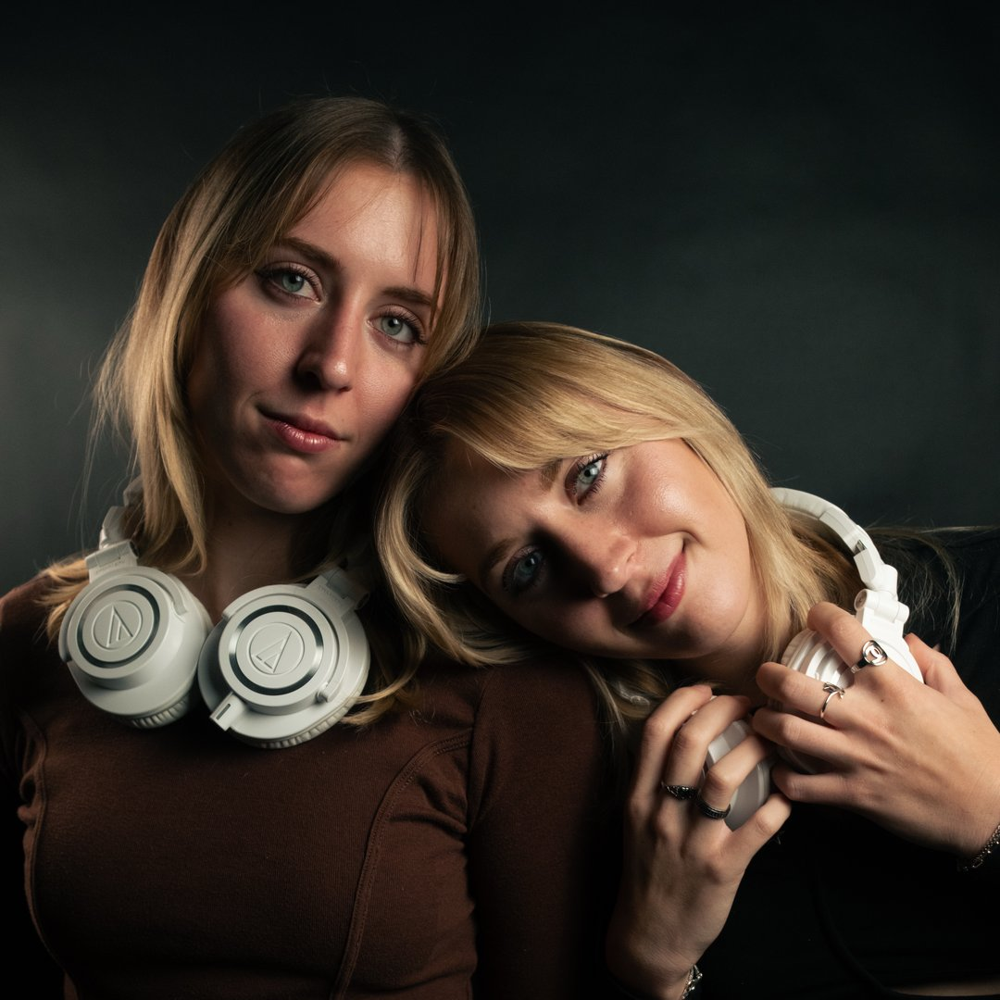
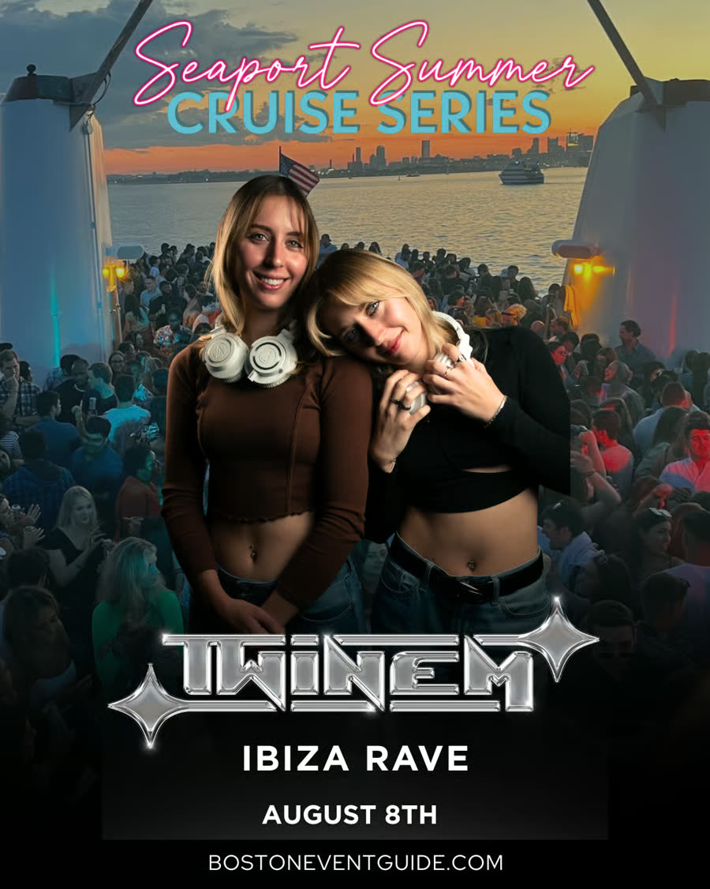
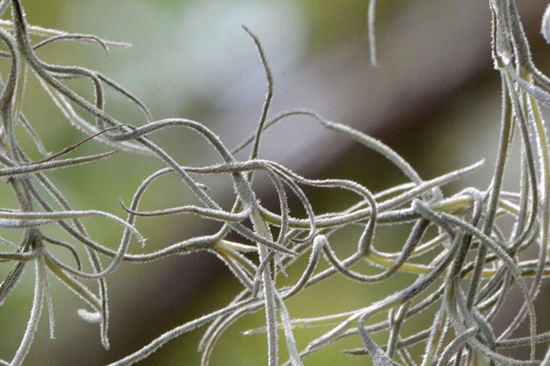
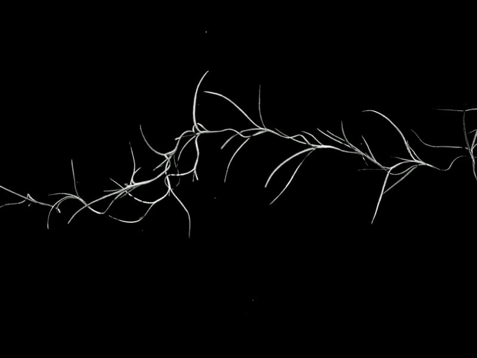
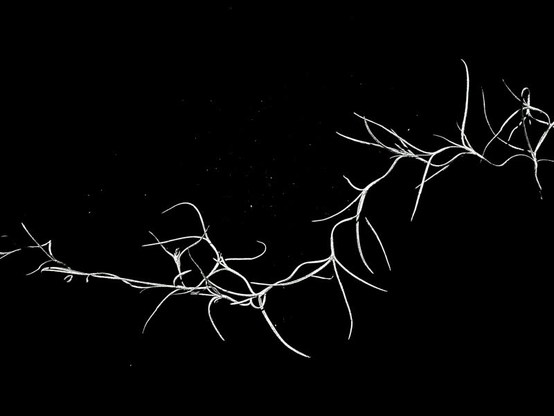
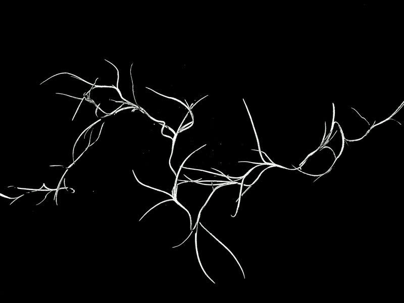
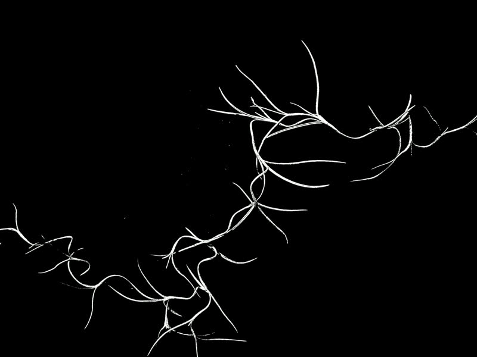
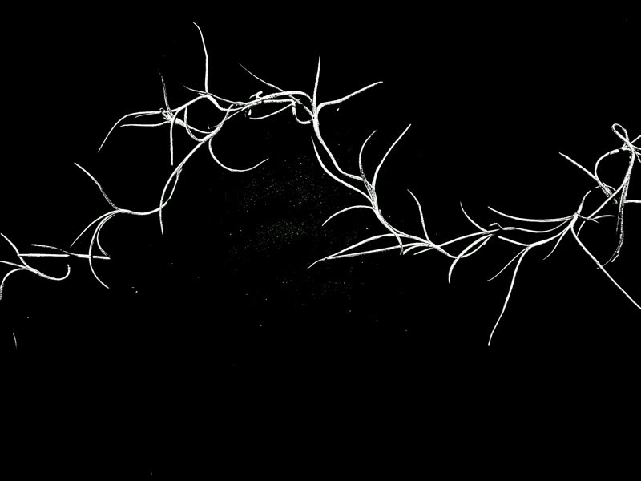
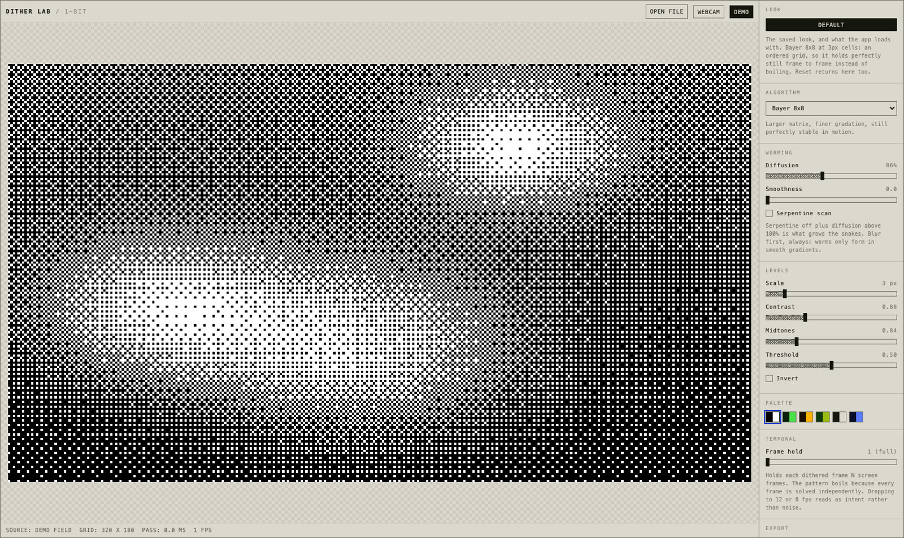

TWINEM × Ibiza Boat Rave
A six-loop Y2K visual pack for twin DJ duo TWINEM's Seaport boat rave in Boston, scoped, built, and delivered in a 96-hour sprint, in their exact brand colors, with zero AI-generated visuals.
Who is TWINEM?

TWINEM (@twinemmusic) is Liv and Emma, a twin-sister DJ duo on the East Coast playing house, bass, and EDM with high-energy, high-femme rave sets. Both queer, both loud about making space for female and twin talent on lineups.
The twin thing isn't a gimmick, it's the brand: matched but distinct. Mirrors, duplicates, symmetry. Their world is Y2K nightlife, neon pink and teal on black, chrome, cherries, and a panther's worth of attitude. The job was to turn that world into moving pictures for their headline boat rave.
An IG story, forwarded twice in ten minutes.
TWINEM posted a story: "Do you make dj visuals?" Two different friends forwarded it to me within minutes of each other.
My first DM led with the thing that makes me me: I make DJ visuals without AI. They loved that instantly, and within the hour we had a call booked and I'd sent over my branding questionnaire.

By the time we hopped on a call, we already got each other.
The branding questionnaire is a form I built that asks an artist to define their own world: the words that describe them, the colors that are theirs, the aesthetic their music lives in, what they want a crowd to feel. TWINEM filled it out the same evening, and their reaction said everything: it made them ask themselves questions they hadn't. So the call wasn't a stranger asking basics, it was three people brainstorming a world we could all already see.
We locked six visuals together on that call. Face-forward shots were out, they weren't comfortable on a big screen, and heavy Y2K distortion became the compromise everyone loved. Files due before Saturday soundcheck.
First question before any pixels: what screen is on that boat? Chased down the same night: a standard 4K TV. 3840×2160, locked.
Six loops, one sprint, zero AI imagery.
Six loops, each a seamless 4K loop in their exact colors, pink #E4175E and teal #3AC0C3, pulled straight from their brand's source files, never eyeballed: chrome logo, twin silhouettes, TV-lines cherries, dithered headphones, twin telekinesis, logo tile wall. They play around 128 BPM; the loops are cut for it.
The porch footage was too dark for software to find the twins in it, so I exported a blown-out bright copy of the same clip purely as a guide, and used that to cut clean silhouettes out of the original. And the "twins" in the silhouette loop are one twin, duplicated in post with a time offset. Boots picked out in brand pink.
Every big call came with options: plain or TV-lines cherries, two dither looks, outline or no-outline chrome. They picked fast, every time.
Their logo, dipped in chrome.
The 3D logo was built in Blender from their true logo vector: a scripted wobble, a static camera, and a perfectly seamless loop. I sent versions with and without the outline; they picked no-outline.
The trick is the reflection. Chrome mirrors whatever world surrounds it, so instead of a generic studio environment, I built a pink-and-teal liquid-swirl world out of their own merch colors. The logo literally reflects their brand as it turns. When they asked for it slightly faster, the speed-up happened in the edit, no re-render needed.
I directed. They filmed. Nobody was in the same room.
I directed every shot from the other end of the phone: which lens, where the camera sat (propped on a soda can), framing adjusted take by take until each shot was right. Emma opened the group chat right after the call, and that thread became a remote film set, with the twins and a friend as the camera crew.
Instead of describing the silhouette look, I sent a YouTube link to Apple's old iPod silhouette ads, the dancing black figures on flat neon color. It was exactly the look Liv had been hunting for since the call.
By the end of the night their whole brand kit had landed, my progress clips were going back the other way, and their reaction after midnight said it all: exactly what they were looking for.

Client notes, turned around the same day.
Every note came back solved the same day. Emma wanted the scanlines pushed more intense on the logo walk. Scanlines are the thin horizontal lines old TVs drew. My heavier version read darker, so I explained why (wider lines fake darkness) and went thinner-but-more instead. Her verdict on v3 was one word: perfect.
Same rhythm everywhere else: they picked the TV-lines cherries and asked for a faster strobe, every third bounce, revised within the hour. And when the headphones loop read too clear head-on, I pushed the dither harder right there, because the anonymity WAS the point.
The lightning is Spanish moss from a morning walk.
The telekinesis shot needed lightning between the twins. My plan was to draw a bunch of squiggles on paper and flip through them stop-motion style. Then, on my morning walk, I saw Spanish moss and realized nature had already drawn them. So I laid the moss out and shot it the way I would have shot the drawings: eight frames, rearranged by hand between each one, isolated to white-on-black, cycled as a flicker.
It works because moss strands and lightning share the same fractal structure. Nature already drew the effect.
Second build-instead-of-buy on this job: first the dither tool, now the lightning.









A custom tool, built mid-sprint.
Dithering is the chunky dot-pattern pixelation old screens used to fake shades of color. The plugins that do it well were too expensive, and I knew I could build my own in about an hour for this project. So I did: wrote my own dithering tool, tuned it to their palette, and ran the loop through it. Then I turned the tool itself into a gift: TWINEM got their own customized copy, their name on it, behind their own passcode, free to use anytime. They can upload footage or flip on live camera mode on a phone and make new visuals in the exact style of their pack, whenever they want, no me required. Full transparency: AI helped me write the tool's code. What the tool puts on screen is their real footage, dithered, never AI imagery.

Same cherries, two decades apart.
The cherries came from their own merch art, bouncing DVD-screensaver style. I built the clean version first, then ran it through the same retro treatment as the rest of the pack, the TV lines and the crunchy dither texture, and sent them both.
They picked the retro one on sight, then asked for a faster strobe. That's the whole pack's look in one comparison: the same idea, moved twenty years back in time.
Their face-shyness became the aesthetic.
Liv wasn't comfortable with her face huge on a venue screen, and there was no time to reshoot anything. The fix came from their own brief: they asked for Y2K, so I pushed hard into pixelation and dithering, which made them unidentifiable AND more on-brand at the same time. Bonus: it scrubbed the headphone brand's logos out of the shot too, so nothing on screen but TWINEM.
Same logic saved the night footage: silhouettes don't care that it's dark. The limitation set the direction, twice.
One folder, built like I was the one receiving it.
Pack complete Saturday morning, hours before soundcheck: every loop in multiple encodes, every file named so a stranger could tell which is which, one shared folder. I keep the full project archived on my side, so the next show starts from a running start.
I VJ myself, a VJ is the person running visuals live at a show, so I built exactly the folder I'd want to be handed: every loop also delivered pre-keyed, meaning with transparent backgrounds so it layers over anything, plus all their logo files riding along. One organized kit they can hand to any VJ at any show, indefinitely. The person loading files at soundcheck is usually not a visuals pro. I build for that person.
And for the shows where there IS a real VJ: I encoded the entire pack to DXV3 using Resolume Alley. Resolume is the industry-standard software VJs run visuals through, and DXV3 is its native format, decoded on the graphics card instead of the processor, so 4K loops trigger instantly and play butter-smooth live. Most DJs get handed files a VJ has to convert before the show. TWINEM's folder is already speaking the VJ's language.
The plot twist: Liv asked the venue about their visuals person and learned there wasn't one. No VJ existed. Hit-play files became the priority.

The show threw a curveball. The work outlived it.
Show night: nobody on the boat could run the visuals, and the pack sat out the set it was built for.
And nothing was wasted. These were never one-night decorations. Six loops in TWINEM's exact colors are their visual identity now, every gig, every clip, already made and theirs. Their message after the show called me a magician.
Clips nobody asked for.
None of these were in the brief. The logo wall wanted more flavors, the chrome logo deserved a stainless twin, and the twins' dancing footage was too good to leave unused. So extra clips kept landing in their folder, free. The logo walls and the stainless spin came out of my own custom software, same spirit as the dither tool: when the look I want doesn't exist, I build the thing that makes it.
What shipped, and what's next.
Shipped
Twelve pieces off a six-loop brief: the six core loops in TWINEM's official colors, two bonus dancing loops nobody asked for, a third logo-wall variant, and a stainless-steel spinning logo made purely as a thank-you. Every clip in three formats (mp4, alpha MOV, DXV3), plus a static logo kit and their own passcode-locked copy of the dither tool. One share link covers everything. First contact to pack-complete in 96 hours.
Locked for the next show
Next show, the visuals question gets answered before show day: who is running them, on what machine, tested in advance. And as a backup, I'll render the whole set as one long video, so if there's no visuals person again, someone presses play once and it just runs. The 3D logo has more moves in it, every project file is archived, and the pack is built to grow.
Four days, three people, one world.
Who did what
Tool chain
↓
Scoped call (screen specs first, six loops locked)
↓
Blender (the 3D chrome logo, scripted motion)
↓
Premiere (cutting the silhouettes out of night footage)
↓
After Effects (composites, scanlines, seamless loops)
↓
dither-lab, my own tool (TWINEM-tuned Y2K pixelation)
↓
My own custom software (the logo walls + stainless spin)
↓
Spanish moss, photographed (became the lightning)
↓
Resolume Alley (DXV3 encodes for the VJ)
↓
Shared-folder delivery (named, labeled, confirmed)
First contact Monday evening → pack complete Saturday 9:42 AM. August 4-8, 2026. Lead to delivered identity in four days.